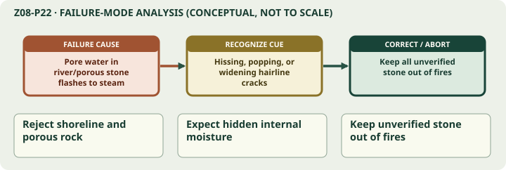

Z08-P22 · Rocks, minerals and materials · New manuscript
Thermal Shock and Wet-Rock Spalling Hazards
Prevent explosive rock shattering caused by trapped internal moisture and rapid temperature gradients near campfires or heated stones.
When it applies · Campfire surrounds, improvised hearths, and any environment with river, shoreline, or porous stones.
Equipment · Dry mineral-soil clearing, approved camp stove or lawful hearth.

Actions
- Do not select unknown rocks for direct fire or heat service. Moisture, pre-existing flaws and thermal stress can contribute to failure, and a dry surface does not clear a rock.[R13, ED]
- Keep people clear of cracking, popping or shifting heated material. The appearance of a stone cannot identify all failure modes.[R13, ED]
- Use a cleared mineral-soil fire pad where lawful or an approved camp stove rather than relying on stacked wild stones to contain fire or heat water.[R13, C01]
Failure recognition · Lining a fire with creek cobbles or dropping unverified hot rocks into vessels causes explosive spalling, severe eye trauma, and scalds.[R13]
Verify · No creek, shoreline, shale, or porous rock is placed near flames or coals, and lawful fire boundaries rely on mineral soil clearance.[R13, C01]
Stop or change course · Stop immediately and step back if any heated stone pops, hisses, or cracks; extinguish safely and abandon stone heating.[R13]
Evidence and editorial notes
- C01 · Minnesota DNR · Fire Danger and Burning Restrictions (current web edition; verify at use)
- Section: Fire danger and burning restrictions map and links · Conditions: Current Minnesota location, date and jurisdiction
Support: Check current restrictions and local authority requirements before lighting.
Limitations: Restrictions can change daily with humidity, wind, and drought; verify immediately before use. · Conflicting evidence: None; local jurisdiction always supersedes general notes.
Editorial note: Mandatory legal check before any live fire card. · Specialist reviewer: Fire prevention and local land management
Primary source · checked 2026-11-24 - R13 · National Park Service · Rocks and Minerals Geological Overview (Current web edition)
- Section: Rocks and Minerals overview · Conditions: Unrated stones near a fire or during thermal cycling
Support: Use agency-approved fire facilities and keep people away from cracking or shifting material.
Limitations: Editorial avoidance. The cited geology overview does not establish a safe rock type, moisture test or heating threshold. · Conflicting evidence: Conditions are recorded in the A03 audit.
Editorial note: Reinforces Z03/Z08 wet-rock spalling stop. · Specialist reviewer: Geologist and fire safety reviewer
Primary source · checked 2026-11-25
Source lineage · New manuscript (Z08 P16 degradation and failure) · Classification · New manuscript.